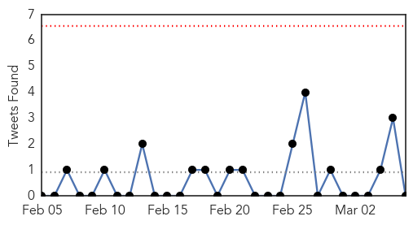
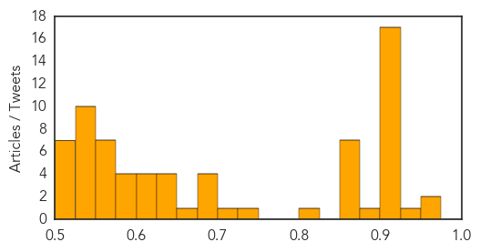
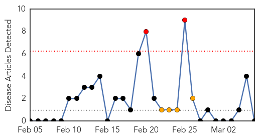
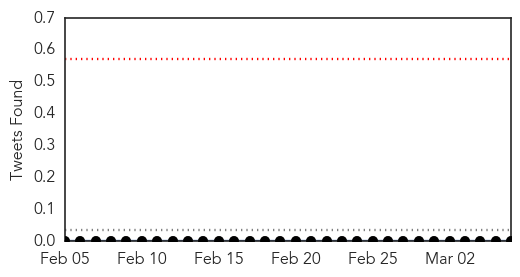

Unknown
30-Day Web Trend
0 alerts, 0 warnings
30-Day Twitter Trend
0 alerts, 0 warnings

Article Locations

Article Confidences
Top Articles:
- 0.963
- 4 new flu deaths reported in North Carolina
- 0.956
- Ross river virus warning after mosquitoes head to Adelaide’s north
- 0.946
- 4 new flu deaths in North Carolina
- 0.924
- Scarlet fever: Warning to parents after rise in cases
- 0.918
- Cases of Antibiotic resistance increase by 12,000% in seven years
- 0.917
- Chicago Tribune
- 0.917
- Chicago Tribune
- 0.917
- Chicago Tribune
- 0.917
- Chicago Tribune
- 0.917
- Chicago Tribune
- 0.917
- Chicago Tribune
- 0.917
- Chicago Tribune
- 0.917
- Chicago Tribune
- 0.917
- Chicago Tribune
- 0.917
- Chicago Tribune
- 0.917
- Chicago Tribune
- 0.917
- Chicago Tribune
- 0.917
- Chicago Tribune
- 0.917
- Chicago Tribune
- 0.917
- Chicago Tribune
- 0.885
- Mystery kidney disease spreads in Sri Lanka
- 0.866
- Syria to miss deadline to destroy 12 chemical arms sites-OPCW sources
- 0.866
- U.S. fighter jets to fly to Poland for training drill
- 0.866
- Police probe written bomb threat at Virginia university
- 0.866
- Kerry to see Italy,UK,Germany,France foreign mins on Ukraine-U.S. official
- 0.866
- File photo of German national flag fluttering in front of solar panels
- 0.866
- EU freezes assets of ousted President Yanukovich and 17 others
- 0.866
- CIS meet on April 4; Russia, Ukraine diplomats could hold talks before-RIA
- 0.820
- Warning over hospital superbug linked to 16 deaths
- 0.728
- Crimean council sets date for referendum on rejoining Russia
- 0.723
- Alzheimers may be third leading cause of death in America
- 0.690
- Fears that cases of antibiotic-resistant bacteria could get 'out of control'
- 0.688
- Critical need for clean water and sanitation as violence continues - South Sudan
- 0.683
- INT: New study ranks Alzheimers as third-leading cause of death
- 0.683
- Three chickenpox cases reported in Kenai/Soldotna area
- 0.663
- The Portland Press Herald / Maine Sunday Telegram
- 0.647
- UN closes Sierra Leone peace mission - Africa
- 0.629
- Rapport du Secrétaire général sur la République centrafricaine, établi en application du paragraphe 48 de la résolution 2127 (2013) du Conseil de sécurité (S/2014/142) - Central African Republic
- 0.627
- Let's stop abortion
- 0.626
- Putin tells Obama Russia 'cannot ignore calls of help' from Crimea
- 0.621
- Monkeys expose narrow window for baby HIV 'cure'
- 0.609
- Integrated Community Case Management (iCCM) Evidence Review Symposium
- 0.603
- 3 questions to ask before taking antibiotics
- 0.601
- Desperate CAR plea for UN peacekeepers as violence rages
- 0.594
- Seafood At NYC Chinatown Markets Linked To Rare Skin Infection; 30 Reported Cases Of Mycobacterium Marinum
- 0.594
- CDC: Hospitals contributing to rise of superbugs – The Chart
- 0.587
- Alzheimer's death toll larger than reported, study says
- 0.578
- How to avoid costly hospital readmissions
- 0.573
- Your Love of Sushi Could Give You a Gross Skin Infection
- 0.567
- Malaria on the move as temps warm: study, World News & Top Stories
Showing top 50 articles...
Top Tweets:
- 0.673
- Flu got you down? You can treat flu symptoms with and without medication. http://t.co/auaeY0dHp3
- 0.583
- 7 days until our Flu Vaccination Awareness launch. Is your natural immunity enough to protect you this flu season? http://t.co/Eq5KWLEZAo
Meningitis
30-Day Web Trend
2 alerts, 4 warnings

30-Day Twitter Trend
0 alerts, 0 warnings

Article Locations

Article Confidences

Top Articles:
-
No articles found for Mar 06, 2014
Top Tweets:
-
No tweets found for Mar 06, 2014